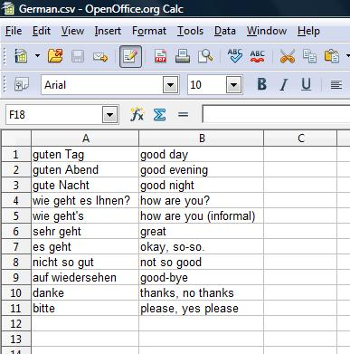

Remata for Android is distributed through the Android Market. This page has additional help for Android Remata, especially help on creating card files. It also has news about the programs and Koine Greek flashcard files you can download.
News
February 11, 2010: A user pointed had difficulty saving Greek characters. New instructions have for entering non-Latin characters have been added to this page here.
September 19, 2009: A user pointed out a problem with the Greek card files on this page. We discovered that files with foreign characters (like Greek) saved from Notepad must be saved in UTF-8 format. The Greek files are now all in UTF-8 format.
May 8, 2009: Progress has been slow. There was no new version in March nor even in April. We apologize for the delay. Unfortunately we still cannot specify when a new version will be released.
February 7, 2009: Added a feedback section to this page to respond to user comments. After the big push to get Remata out there hasn't been very much time to work on it. Things should be clearer in February and hopefully a new version will be out sometime in March.
January 21, 2009: Web page is up and running. Remata app is uploaded to Android market and is available.
January 18, 2009: First verison of Remata app is ready to be released.
December 28, 2008: Sample and downloadable cards files created. Web page is almost up and running.
December 27, 2008: Primary coding of Remata is complete. The code is functional and is undergoing testing.
Comma Separated Files
Remata card files are comma separated files. They have a ".csv" extension.
 The simplest way to create a Remata csv card file is with a spreadsheet. Both Excel and OpenOffice Calc can be used. Put one card on each row. Put the card fronts in Column A and the backs in Column B. Save the file as a comma separated (csv) file. The picture on the right shows the sample German card file in a spreadsheet. It is the same file that is referred to below.
If you don't have or don't like spreadsheets, you can create Remata csv card files with any program that creates and edits text files Notepad, WordPad, MS Word and OpenOffice Writer can make such files. For many programs like Wordpad, MS Word or OpenOffice Writer you need to tell the program to save the file as a text file. In all programs, if you use foreign characters (like Koine Greek) you must also make sure that the file is saved as unicode text using UTF-8 format. These are options on the save panel when you first save the file.
When you create Remata csv files with a text editing program it must follow a specific format. There must be one flashcard on each line. On each line put the data for the front of the card first. Follow the front material by a comma. After the comma put the data for the back of the card. If the card data contains commas, surround the data with double quote (") marks.
Here is a sample csv file.
Here are two lines (two cards) from the csv file.
"danke","thanks, no thanks"
"bitte","please, yes please"
Csv files are a common way to exchange data. Using Csv files allows Remata to accept most kinds of flashcard data. For example, downloads from the Flashcard Exchange should be easy to use with Remata. A general description of how csv files work is on Wikipedia.
Now, a few more words on foreign characters. When using a non-Latin script be sure you enter unicode characters using a correct keyboard. For example, there are several old Greek and Hebrew fonts that are not unicode. If you use them, the csv file does not remember the font and won't keep the Greek or Hebrew. On a Windows machine you must go to the Control Panel and use Regional and Language Settings to add a keyboard for the language you want. Then, when entering text, you can then change between keyboards using alt-shift. Sometimes the non-Latin characters don't display well -- standard fonts either do not support them or do not support them well. Remata uses Gentium, a freely distributed font that supports many languages. You can download it and install it on your computer. It is not necessary to have a good font -- the characters will still save correctly and display well in Remata -- but it does make things look better on your computer.
Xml Files
Remata also reads xml files. You probably don't need to worry about this right now. It's easier to use csv files as described above. Just skip to How to Put Card Files on Your Phone.
If you're still reading you must really be interested so let me start with a brief explanation. Remata's web version gets its data from xml files. Its xml files are complex because it tries to mimic the Remata spreadsheet's functions. It also was supposed to be able to handle other data besides Greek, which makes it even more complex. When Remata for Android was created it was natural to use xml files. They are greatly simplified from the web version. Even so, it became obvious that csv files would be much simpler. Thus csv files are how most people should use Remata.
Despite this Android Remata kept it's xml file reading capability. For one thing, Eric, the developer, hates throwing code away. For another, he hopes to one day provide more functionality than csv files can support. Rest assured, your csv files will never be obsolete -- they will always work. They just can't support some advanced features like filtering or image files that will hopefully be in future versions of Remata.
Finally, here is some help on creating xml files for Remata should you really wish to do it. Xml files can be created from text editors or from most spreadsheets. The text here will only describe the Remata xml format. It will be assumed that you know enough about your text editor or spreadsheet to create files like the one shown below.
Here is a short Remata xml card file.
For comparison it has the same data as the csv file above.
Here is a short snippet from the above xml file.
<?xml version="1.0" encoding="utf-8"?>
<cardList>
<card>
<front>danke</front>
<back>thanks, no thanks</back>
</card>
<card>
<front>bitte</front>
<back>please, yes please</back>
</card>
</cardList>
The <cardList> tag is used to define the list of cards. Each card is defined by a <card> tag. The front of the card is defined by a <front> tag. The back of the card is defined by a <back> tag.
How to Put Card Files on Your Phone
Once you've made your card files you need to transfer them to your phone. You do this the way you transfer most files to your phone. Hook the phone to your computer with the USB cable. On your phone pull down the top shade and pick the connection notification. Push the "Mount" button. On your computer open the device as a Windows Explorer window.
Now that the phone and your computer are connected you need to copy your files to the phone. In the Windows Explorer windows for your phone make sure the Remata directory exists. If it doesn't, create it. Navigate to the Remata directory. Open another Windows Explorer window and go to the directory where you stored your card files. Select all the files you want to put on your phone. Copy them (control-C or select "Edit" + "Copy" from the window menu). In the Remata window, paste (control-V or select "Edit" + "Paste" from the window menu.
Your files are now on your phone. Disconnect your phone from you computer. Start Remata, push the menu button and pick "Get cards". You should see your new card files in the list.
Downloads
Here are New Testament word card files you can download.
Eric's Response to User Feedback
Thank you to everyone who has provided feedback. I'm overwhelmed by some of the really nice comments about Remata. I also appreciate the suggestions and constructive criticism.
Need to shuffle cards. Shuffle (or randomize) is in the works. It's the first enhancement on my list.
Swiping control. I never even thought about swiping, so thanks for the idea. Swiping is only the coolest part of the Android UI and I just whiffed on it. I am thinking about how to best integrate it. Hopefully it will be there soon.
Create cards on the phone. This is another thing that never occurred to me. However, there are already many comments about this. It would be a major addition to Remata but I will look into it.
Too few card sets. The major idea of Remata is that you can create your own cards on your PC. The provided card sets are meant as samples. Of course, if you are studying Greek you can download many files above. A site to share card sets might be a good idea. (Although the Flashcard Exchange mentioned above has millions of sets, most of which should be downloadable to Remata.) I don't currently have any plans for a sharing site. It could be a good little project (business?) for one of you!
Support for pictures. I've thought about allowing Remata to use pictures. My daughter is an art history major and is surely one person who could use it. However, it means some significant changes. It probably won't come for a while.
Remata's size. I've received one comment about Remata's size. I know phone app space is precious. Most of the size of Remata is due to a font I had to include. Android's current fonts don't support my Koine Greek. The only way to add a font is to include it with the app. I may release a "Remata Lite" that does not have the font for those of you who don't care about Greek. Android's fonts are reportedly being upgraded -- perhaps they will support Koine Greek soon and I won't need the font. I'll monitor the situation.
Bugs
Problem with "big" cards: It is hard to see and scroll cards with a lot of information. Greek on this site wrong: Fixed Greek zip files Sept. 9, 2009. If you downloaded the bad files, you might have to clear your browser's cache to get the new ones.